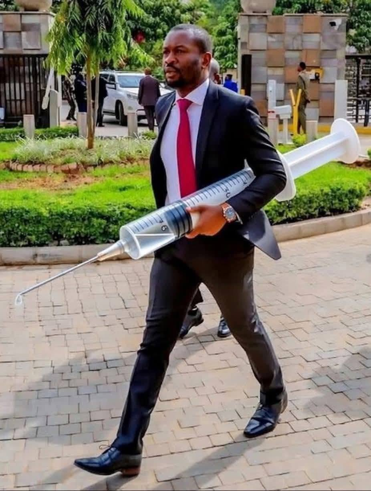

Sifuna Sees 2027 Election Miracle After Democrats’ Shock US Victory
News
Nairobi Senator Edwin Sifuna has expressed confidence that Kenya could experience a major political shift in the 2027 General Election, saying miracles are possible after witnessing the political developments in the United States.
Speaking in Parliament on Wednesday, November 4, 2026, Sifuna said the events unfolding in the US demonstrated that unexpected electoral outcomes were possible, suggesting that Kenya could experience a similar political change next year.
His remarks came hours after he celebrated the Democratic Party's performance in the US midterm elections, describing the victories as a triumph for leaders who genuinely care about ordinary citizens.
In a message shared on X, Sifuna wrote: "It feels very nice to see good people winning elections. Watu roho safi tu who actually care about ordinary citizens. Bad people have been winning too much bwana."
He went on to describe the Democrats' performance as a "blue wave", a phrase that also carries political significance for his Linda Mwananchi movement, whose colours are blue and white.
According to reports, Democrats made significant gains in the November 3 elections, taking control of Congress in a major setback for President Donald Trump and the Republican Party.
The results appear to have reinforced Sifuna's argument that established political forces can be defeated through elections, even when they appear firmly in control.
The senator has previously pointed to political developments in Serbia and Brazil as examples of unexpected electoral victories, saying they had strengthened his optimism about Kenya's 2027 elections.
Sifuna is increasingly positioning himself as a key figure in the opposition's political realignment through the Linda Mwananchi movement as politicians begin preparing for the next General Election.
His latest remarks add to growing political speculation about whether the opposition can organise itself into a formidable force capable of challenging President William Ruto in 2027.